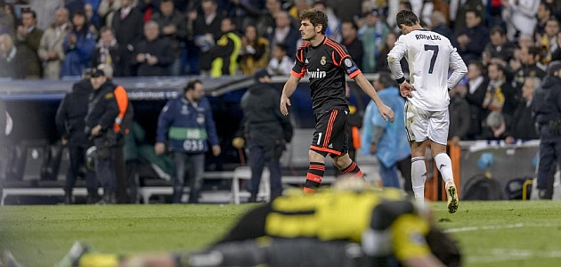

FUTBOL


FUTBOL
El Madrid llega tarde al vuelo a Wembley
Casillas sale a consolar a sus compañeros
Dos goles de Benzema y Ramos en los últimos diez minutos dejaron al Madrid al borde la final de la Champions por tercer año consecutivo. Pero los tantos llegaron demasiado tarde, en especial si se recuerdan las tres clarísimas ocasiones que los blancos desperdiciaron en el primer cuarto de hora y que pudieron haber definido un guión de partido totalmente distinto. Pero no; al final fue el mismo de los tres últimos años.
Un cuarto de hora de ceguera condenó al Madrid. Se cumplió casi completo el ritual de las remontadas. Al final faltó el gol, sólo uno, ese elemento para algunos tan prosaico que, para quitarle lustre, se suele atribuir casi de forma exclusiva a eso que llaman pegada. Así, sin más. Y el Madrid es, por supuesto, el rey de la pegada.
Si tal cosa es cierta, esa virtud (para algunos un defecto) le abandonó en el momento más inoportuno. Saltó a un Bernabéu inflamado, poblado por 85.000 fieles que creían ciegamente que sí, que era posible. Y lo cierto es que, de salida, lo pareció. Con un centro del campo compuesto por Modric y Xabi, el Madrid presionó arriba, recuperó con rapidez y circuló con rapidez la pelota. Los blancos supieron encontrar grietas por dentro y pudieron remontar la eliminatoria en un cuarto de hora. Así, como suena. Higuaín volvió a evidenciar su desamor con la Champions fallando un mano a mano con Weidenfeller en el minuto cuatro, aunque lo peor estaba por llegar. Cristiano tuvo un remate que en uno de esos días tontos que suele tener, de dos o tres goles, hubiera embocado (minuto 9). Y Weidenfeller volvió a aparecer para negarle el gol en el 14', tras un extraordinario pase de Xabi Alonso.
Pese a todo, el Bernabéu creía, los jugadores creían. El Borussia olía a miedo. El desgaste de los blancos estaba siendo enorme, pero el premio tenía que llegar. El regalo quedó envuelto para Mesut Özil, que se plantó solo ante el meta rival. Tuvo tanto tiempo para pensar, tantas opciones para elegir, que apostó por la peor. Tenía entregado a Weidenfeller, vencido ya, pero quiso ajustar tanto que la envió fuera. Era el minuto 16.

Comentarios
Invitado324
Gran artículo